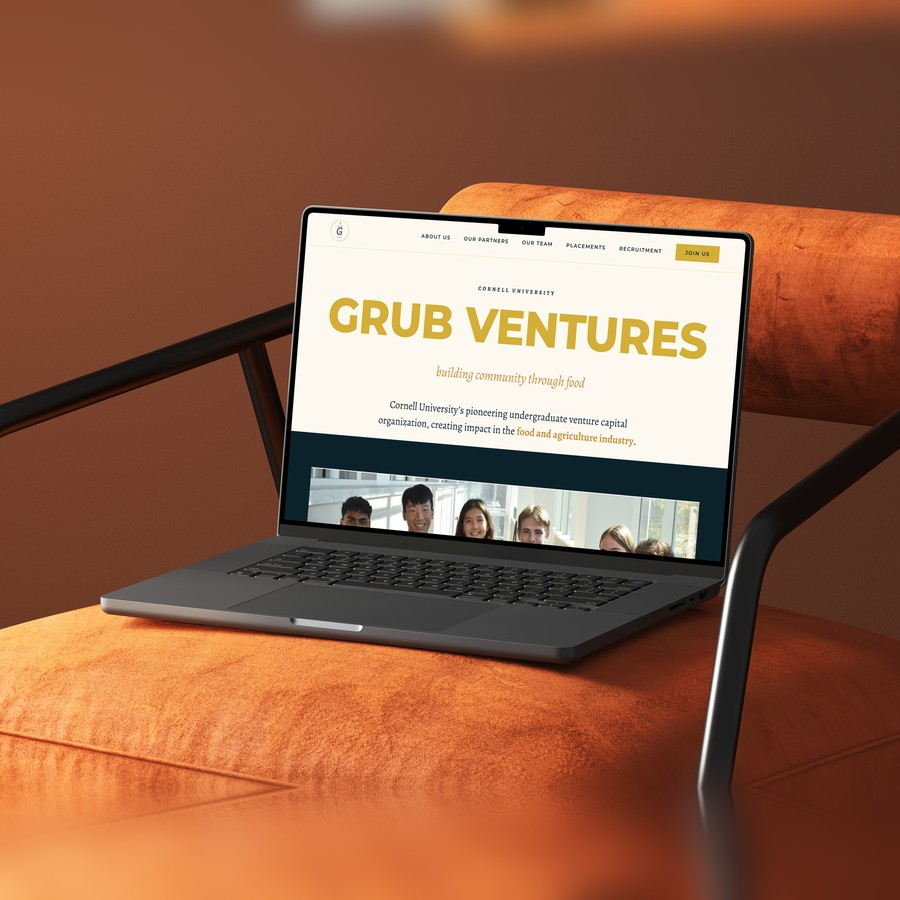

Appetizer
Appetizer
Entrée
Dessert

I wanted to start freelancing, so I built my own brand to show clients how I design.
Designing a responsive travel landing page for young adult travelers, with a clear visual design system.

Building a brand and marketing recruiting pipeline for a new food x venture capital club.

An Instagram account I started to help people discover new songs, especially from indie artists.

I keep something from every place I visit and every experience I live.